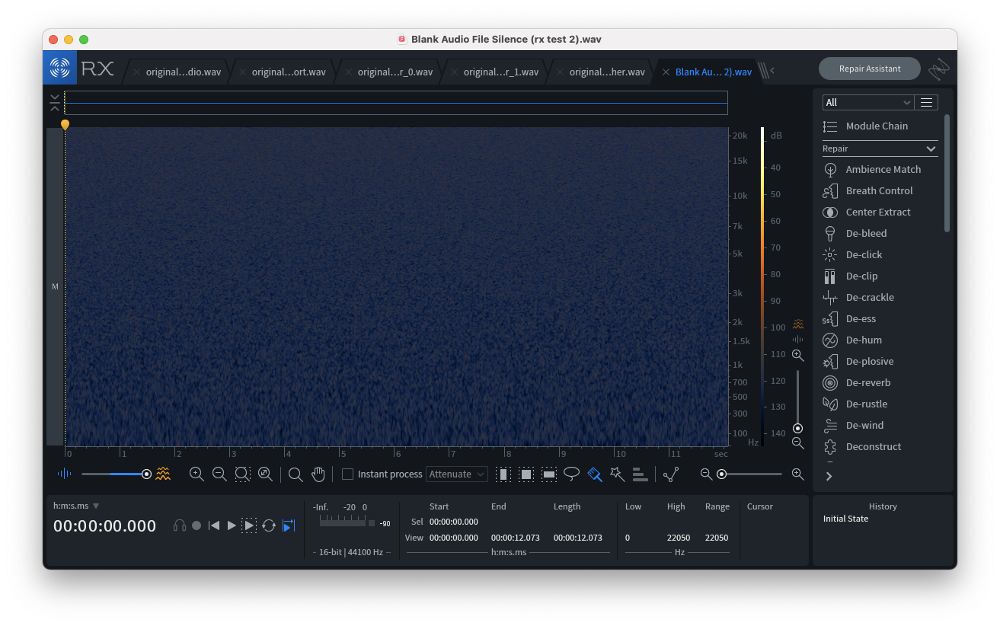
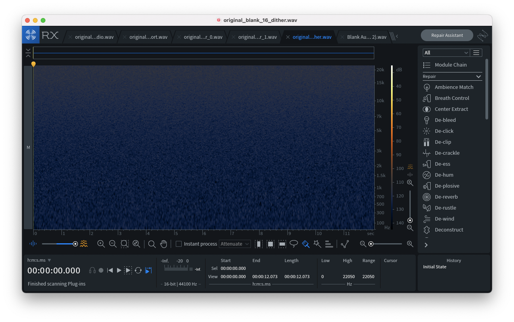
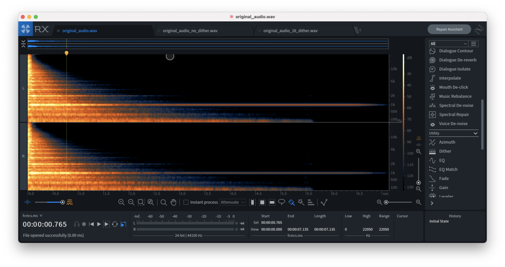
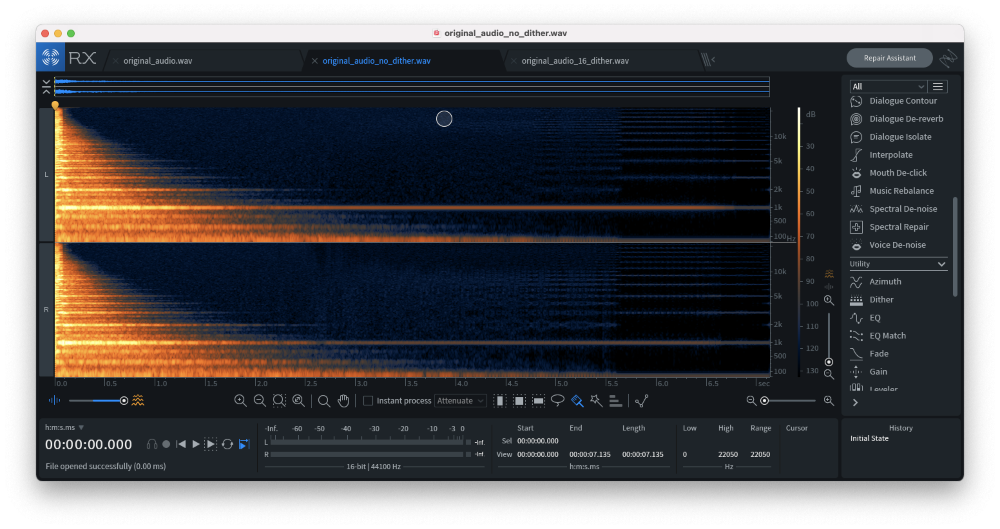
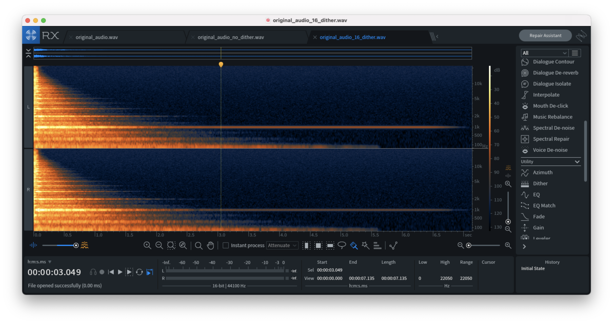

Recently I had an opportunity to dive into the noisy world of dithering.
What is Dithering?
According to Wikipedia, “dither is an intentionally applied form of noise used to randomize quantization error, preventing large-scale patterns such as color banding in images.” In the case of signal processing as pertains to audio, these patterns emerge as spectral artifacts, producing audible frequency content not found in the original audio source. Also according to Wikipedia, the word “dither” comes from the middle english verb “didderen,” meaning, “to tremble.” Dithering is the curious case where adding noise or “tremble,” to a signal provides more information – what a concept!
Earlier this year I was tasked with implementing a dithering algorithm at Output, which is an algorithm I had yet to previously implement. In software engineering, it seems to me that common problems arise and there’s typically tried-and-true methods for solving these problems. In the case of dithering, this is also true, as there’s a number of decent dithering algorithms available in closed-source software such as Izotope RX, or Ableton Live, some of which I had difficulty finding information about online. Thanks to organizations such as Airwindows and Audacity, there are some open-source implementations available which allowed me to observe how some of these algorithms, such as how Triangular Probability Density Function (TPDF) dithering had been implemented by others.
Why Dithering?
Computers use what is known as an Analog-to-Digital Conversion (ADC) process to convert analog audio signals to it’s digital representation using what is known as the Sampling Theorem. A sample is a slice of a continuous audio signal, and samples are played in sequence at sample rate to form an audible signal. When sampled correctly, a continuous signal can be exactly reconstructed using its sampled equivalent. When sampling is performed incorrectly, such as when the frequency of the analog signal is greater than the Nyquist frequency (one-half of the sampling rate), aliasing occurs where the frequency of the sampled data differs from the frequency of the original signal. Aliasing corrupts the sampled information causing the reconstruction of the original signal to be impossible.
Note: the example images in this post are displayed using a spectrogram which displays the frequency content of an audio source. The ‘Y’ axis of the image is frequency whereas the ‘X’ axis is time.
How is Dithering Implemented?
Audio signals can be digitally represented as either an integer value within a signed bit range, or as a floating-point value. In my case, I was dealing with floating-point values that I had to scale to their signed bit range value before adding noise to the audio signal. The number of possible integer values in the signed bit range can be calculated as:
2 ^ bitrate
with a range of:
bit = 2 ^ bitrate - 1
range = { -bit , bit - 1 }
In the case of 16-bit bitrate, the possible number of integer values is 65,536 with a range of -32,768 to 32,767.
Next, floating point noise is added to the audio signal in it’s signed bit representation, resulting in modulation of the Least Significant Bit, adding noise to the noise floor, eliminating quantization errors at the cost of a nearly imperceivable addition to the noise floor of the audio signal.
TPDF dithering involves the following calculation:
// range of 'rand' is { -1.0, 1.0 }
(rand * rand) / N
which multiplies N number of random values in the floating-point signal range (-1.0 to 1.0), divided by N.
Example of TPDF (silent audio source):
However, noise-shaped TPDF Dithering takes a slightly different approach by tracking the previous random value and subtracting it from the current random value – this creates a “shaped,” effect which reduces the amount of noise distributed to the middle frequency bands.
rand = ( rand - previous_rand )
previous_rand = rand
Example of noise-shaped dithering (silent audio source):
While either dithering type is an acceptable choice, I have a preference for noise-shaped dithering as it eliminates some noise in the mid-frequency band. Other types of dithering such as Ableton Live’s POW-r algorithm I have yet to explore, namely because I had difficulty finding information about these algorithms online. If you have experience implementing other types of dithering I’d love to hear your experience.
The Results
The difference between the dithered and non-dithered downsampled audio is evident when analyzed using a spectrogram. In the images below, the second example (no dithering) contains spectral artifacts on the right-hand side of the image, whereas the third image contains noise but no artifacts. The noise signal we’ve added to our audio source safely negates quantization errors by replacing the silence with noise while being virtually imperceivable.
Original audio file:
Downsampled audio file without dithering (notice the artifacts):
Downsampled audio file with dithering (no artifacts):
Conclusion
The exploration of dithering was an exciting and challenging experience that aided me in growing a bit further in my skillset as an audio software engineer. While the implementation process wasn’t as seamless as I had hoped due to some issues with low frequency content I had added to the signal in my initial attempts as a result of my incorrect calculations, this exploration helped me demystify the concept of dithering and further clarify my understanding of signal processing as pertains to audio bit depth, signed integer ranges, and bit modulation. I hope this blog post helps any reader that may be currently implementing their own dithering algorithm, may be curious as to how dithering works, or is simply interested in the work that I am doing.
Thanks for reading. Until next time, friends.